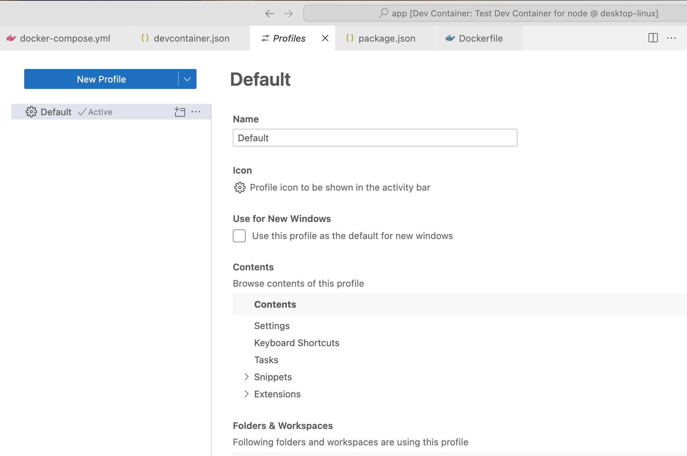

Dev Container/Issue/Extension Not Found
- GitHub/codekiln/dev-container-test
- VSCode/Extension/QuickStage not installed
- one of the reasons I created this test repo was to see if I could reproduce the issue I saw 2025-02-08 Sat in Person/codekiln/GitHub/alits where QuickStage wasn't installed, even though I had it in my DevContainer/.devcontainer.json file. Sure enough, this minimal test repo does reproduce it.
[6895 ms] Extensions cache, install extensions: dbaeumer.vscode-eslint, bs-code.git-quick-stage, ms-azuretools.vscode-docker, GitHub.vscode-pull-request-github [6895 ms] Extensions cache, install extensions: dbaeumer.vscode-eslint, bs-code.git-quick-stage, ms-azuretools.vscode-docker, GitHub.vscode-pull-request-github [6895 ms] Start: Run in container: test -d /home/node/.cursor-server/extensionsCache && ls /home/node/.cursor-server/extensionsCache || true [6896 ms] [6896 ms] [6896 ms] Start: Run in container: test -d /vscode/cursor-server/extensionsCache && ls /vscode/cursor-server/extensionsCache || true [6896 ms] [6896 ms] [6896 ms] Extensions cache, link in container: None [6897 ms] Start: Run in container: /home/node/.cursor-server/bin/f5f18731406b73244e0558ee7716d77c8096d150/bin/cursor-server --log debug --force-disable-user-env --server-data-dir /home/node/.cursor-server --use-host-proxy --telemetry-level all --accept-server-license-terms --host 127.0.0.1 --port 0 --connection-token-file /home/node/.cursor-server/data/Machine/.connection-token-f5f18731406b73244e0558ee7716d77c8096d150 --extensions-download-dir /home/node/.cursor-server/extensionsCache --install-extension dbaeumer.vscode-eslint --install-extension bs-code.git-quick-stage --install-extension ms-azuretools.vscode-docker --install-extension GitHub.vscode-pull-request-github --start-server --disable-websocket-compression --skip-requirements-check [6963 ms] userEnvProbe PATHs: Probe: '/usr/local/share/nvm/current/bin:/usr/local/share/npm-global/bin:/pnpm:/usr/local/share/nvm/current/bin:/usr/local/share/npm-global/bin:/usr/local/sbin:/usr/local/bin:/usr/sbin:/usr/bin:/sbin:/bin:/home/node/.local/bin' Container: '/pnpm:/usr/local/share/nvm/current/bin:/usr/local/share/npm-global/bin:/usr/local/sbin:/usr/local/bin:/usr/sbin:/usr/bin:/sbin:/bin' [7980 ms] [09:19:18] Extension 'bs-code.git-quick-stage' not found. Make sure you use the full extension ID, including the publisher, e.g.: ms-dotnettools.csharp [15991 ms] [09:19:26] Extension 'dbaeumer.vscode-eslint' v3.0.10 was successfully installed. [09:19:26] Extension 'github.vscode-pull-request-github' v0.102.0 was successfully installed. [09:19:26] Extension 'ms-azuretools.vscode-docker' v1.29.4 was successfully installed. [15992 ms] [09:19:26] Error: Failed Installing Extensions: bs-code.git-quick-stage at Kc.installExtensions (file:///vscode/cursor-server/bin/linux-arm64/f5f18731406b73244e0558ee7716d77c8096d150/out/server-main.js:71:35452)
- I pushed up the repo to codekiln/dev-container-test: testing a simple dev container, now I'd like to contact the QuickStage plugin author, GitHub/Bluesteel-Software
- I looked through git-stage-file/extension.js at main · Bluesteel-Software/git-stage-file and it looks remarkably easy to create a VSCode/Extension; I'll have to do that sometime.
- Unrelated issues in VSCode (it's actually a cursor issue)
Extensions defined in devcontainer.json are not installing · Issue #8097 · microsoft/vscode-remote-release closed 2023/03
What I observe (@orolega please confirm): When open a dev container, switch to a non-default profile and then rebuild that container with extensions listed in the devcontainer.json to be installed at server startup, I end up in the non-default profile without the extensions (that seems unexpected). If I then switch to the default profile, the extensions are there.
- that sounds related to the behavior I'm observing
- what happens if I switch VSCode/Profiles?
- Profiles in Visual Studio Code VSCode/Docs/Editor/Profiles

- what happens if I switch VSCode/Profiles?
- Found CursorAI/Forum posts mentioning items very similar to this
- Dev Containers does not work in 0.45.0 - Bug Report - Cursor - Community Forum 2025/01
- I didn't see this warning (yet, thankfully), but I would hate to see it!
The Dev Containers extension is supported only in Microsoft versions of VS Code
[7 ms] Dev Containers 0.394.0 in VS Code 1.96.2 (f06cc5e62b757b2bf61ec052a8701fb2da9ded20). [7 ms] The Dev Containers extension is supported only in Microsoft versions of VS Code
- Extension Marketplace Bug - Bug Report - Cursor - Community Forum original date 2024/08,
- OP - Summary - Elliot - Cursor - Community Forum
- I’m having a really odd bug with the extensions marketplace. For my work I’m supposed to get the Dev-Containers extension, however, this never shows up (along with lots of other extensions). It’s like I have an entirely different marketplace then my coworkers (I’ve cleared filters and reinstalled Cursor already). I tested this out with Dev Containers specifically. The only way I was able to get the Dev Containers was by downloading it from the Microsoft Store and then uploading it to Cursor. However, once it installed, the Dev-Containers extension did not work properly. I installed the newest version (since it was the only available option) of Dev Containers (v0.381.0). I tested marketplace on a different PC and account and I was able to find Dev Containers (however, it was v0.327.0) and it worked as expected. Couldn’t find a download for that version anywhere so I decided to just address this bug.
- The issue with Dev Containers v0.381.0 is the VS Code Server not installing properly on Cursor (everything works fine on VS Code on v0.381.0).
- This is using:
Version: 0.39.3
VSCode Version: 1.91.1
Commit: 5c6f02b83b0bbdce7811fb295219e9668f58ac90
Date: 2024-08-09T01:17:07.954Z
Electron: 29.4.0
ElectronBuildId: undefined
Chromium: 122.0.6261.156
Node.js: 20.9.0
V8: 12.2.281.27-electron.0
OS: Darwin arm64 23.5.0
- Person/Terry Li recent update 2025/01
Step 1. Install this safer compatible version
0.327.0will help download the compatible VS Code Server version:- https://marketplace.visualstudio.com/_apis/public/gallery/publishers/ms-vscode-remote/vsextensions/remote-containers/0.327.0/vspackage
- Step 2. Latest compatible version for Cursor + MacOS:
- After Step 1, we can download and install
0.386.0, which is tested to be still working as of January 15, 2025  Directly installing it on Cursor won’t work because it’ll still download the incompatible version of the VS Code Server.
Directly installing it on Cursor won’t work because it’ll still download the incompatible version of the VS Code Server.- https://marketplace.visualstudio.com/_apis/public/gallery/publishers/ms-vscode-remote/vsextensions/remote-containers/0.386.0/vspackage
- Version: 0.44.11
VSCode Version: 1.93.1
Commit: fe574d0820377383143b2ea26aa6ae28b3425220
Date: 2025-01-03T07:59:06.361Z
Electron: 30.5.1
Chromium: 124.0.6367.243
Node.js: 20.16.0
V8: 12.4.254.20-electron.0
OS: Darwin arm64 24.3.0
- OP - Summary - Elliot - Cursor - Community Forum
- I ended up posting Dev Containers not installing valid VS Code Extension - Minimal Reproduction - Bug Report - Cursor - Community Forum Forum/post 2025-02-09 Sun
- Dev Containers does not work in 0.45.0 - Bug Report - Cursor - Community Forum 2025/01

1 Linked Reference
Hierarchy
- Dev ContainerIssue